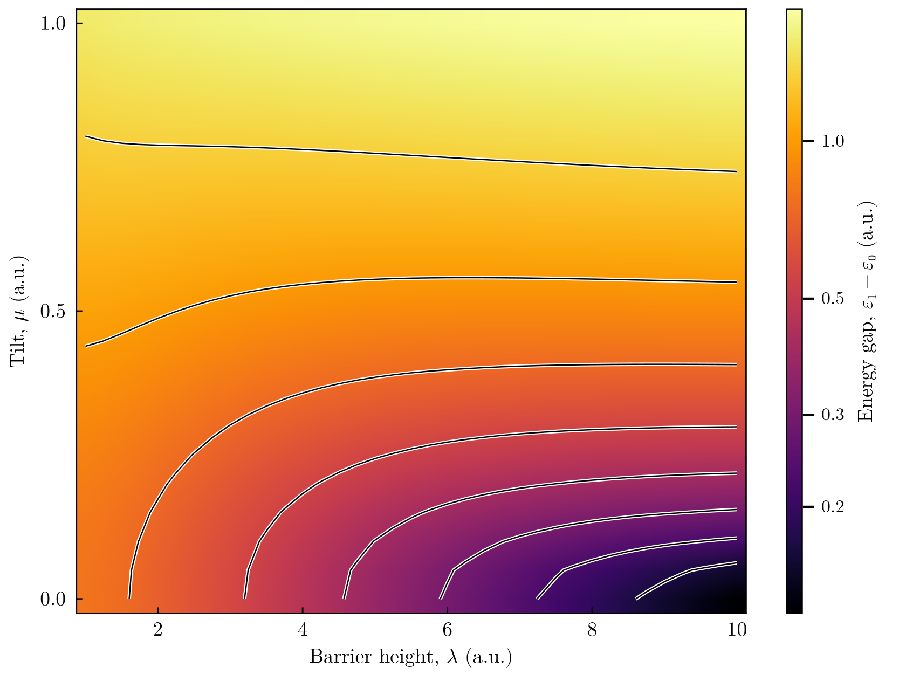
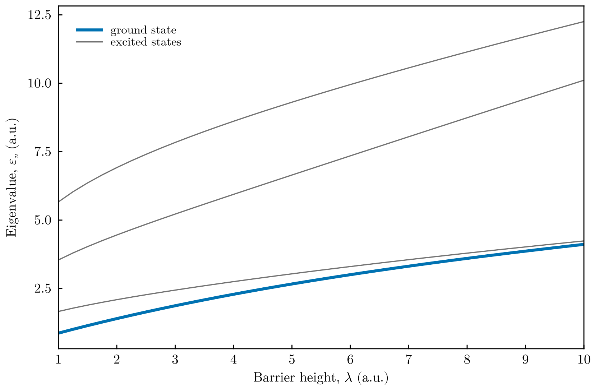

Eigenvalues over two parameters: the tilted double well
This tutorial computes the eigenvalues as functions of two parameters of the potential and plots them as a two-dimensional map, using the two-parameter sweeps and the plotting functions introduced in FEMTISE v0.2.0. The system is a particle (mass 1, atomic units) in the tilted double well
\[\hat H = -\frac{1}{2}\frac{d^2}{dx^2} + \lambda\,(x^2-1)^2 + \mu\,x ,\]
where $\lambda$ is the height of the barrier between the minima at $x = \pm1$ and $\mu$ the tilt. In the symmetric well ($\mu = 0$) the two lowest states are the symmetric and antisymmetric combinations of the states localized in each well; their tunnelling splitting $\varepsilon_1-\varepsilon_0$ decreases exponentially as the barrier grows. A tilt localizes the states in one well, and the gap approaches the energy difference between the wells, $\approx 2\mu$.
All files are in src/double_well_parameter_map/ of the FEMTISE_TUTORIAL repository.
1. The potential
adhoc_potential_function.jl:
function double_well(x, params::Tuple)
λ, μ = params
return λ * (x[1]^2 - 1)^2 + μ * x[1]
end2. The input file
The first parameter is swept with analysis_param and the second one with the optional setting analysis_param_2. Both have the form index initial_value final_value step:
full_path_name = ./output/double_well_map
dom_type = s
nev = 4
dimension = 1D
sigma = -2.0
adhoc_file_name = ./adhoc_potential_function
potential_function_name = double_well
params_potential_types = f f
params_potential = 1.0 0.0
analysis_param = 1 0.75 10.0 0.25
output_format_type = jld2 eigen
## ONLY FOR 1D EIGENPROBLEMS
L = 8.0
Δx = 0.02
## ONLY FOR 2D EIGENPROBLEMS
Lx =
Ly =
nx =
ny =
different_masses =
reduced_density =
## OPTIONAL SETTINGS (FEMTISE v0.2.0)
analysis_param_2 = 2 -0.05 1.0 0.05
quadrature_degree = 8The driver evaluates $\lambda_i + k\,\Delta\lambda$ for $k = 1, 2, \dots$, so the values above give $\lambda = 1.0, 1.25, \dots, 10.0$ (37 values) and $\mu = 0.0, 0.05, \dots, 1.0$ (21 values): 777 eigenvalue problems, solved on the same mesh and finite element spaces. quadrature_degree = 8 integrates the quartic potential exactly, so the eigenvalues are upper bounds.
The same sweep with the low-level interface:
V(x, λ, μ) = λ * (x[1]^2 - 1)^2 + μ * x[1]
model = CartesianDiscreteModel((-4.0, 4.0), (400,))
E = sweep_eigenvalues(model, V, 1.0:0.25:10.0, 0.0:0.05:1.0; nev = 4, sigma = -2.0,
quadrature_degree = 8) # E[n, i, j]3. Running the tutorial
julia --project=. src/double_well_parameter_map/run_tutorial.jlThe results are reloaded with collect_result_data, which returns an AnalysisParams2D with the fields ϵ_tensor (ϵ_tensor[n, i, j] is the $n$-th eigenvalue at $\lambda_i$, $\mu_j$), λvector and μvector. The figures are drawn by the plotting functions of FEMTISE, available when a Makie backend is loaded:
using CairoMakie
fig = plot_energy_map(λ, μ, E; gap = (1, 2), colorscale = log10) # ε₁ − ε₀
fig = plot_energy_curves(λ, E[:, :, 1]) # cut at μ = 04. Results

Gap between the two lowest levels over the barrier height $\lambda$ and the tilt $\mu$, on a logarithmic colour scale with level lines equally spaced in $\log_{10}(\varepsilon_1-\varepsilon_0)$. At $\mu = 0$ the gap is the tunnelling splitting, which drops from 0.79 hartree at $\lambda = 1$ to 0.13 hartree at $\lambda = 10$ (dark corner). For large barriers a small tilt is enough to destroy the tunnelling doublet: the level lines turn horizontal and the gap is set by the energy difference of the two wells.

The four lowest eigenvalues of the symmetric well ($\mu = 0$) as functions of the barrier height. As $\lambda$ grows, the levels pair up into tunnelling doublets: the ground state (thick line) and the first excited state approach each other.
5. Things to try
- Plot a single eigenvalue instead of a gap:
plot_energy_map(λ, μ, E; level = 1). - Plot the gap between the second doublet and the ground state,
gap = (1, 3), and compare with the vibrational frequency of each well, $\approx\sqrt{8\lambda}$. - Extend the barrier range and observe the exponential decrease of the splitting on the logarithmic colour scale.